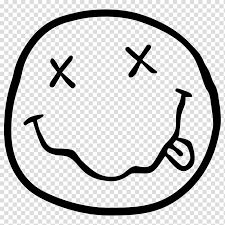

Сайт-звіт до лабораторних робіт студентки 1 курсу Педосюк Дар'ї групи "Математики"
Лабораторна робота №2
Создать выпадающее меню, с помощью которого можно выбрать цвет фона документа (создайте четыре варианта цветов). Создайте обработку события наезда на картинку мышки появлением строки «ПРИВЕТ,МИР» в многостроковом поле ввода информации некоторой формы данного документа.
